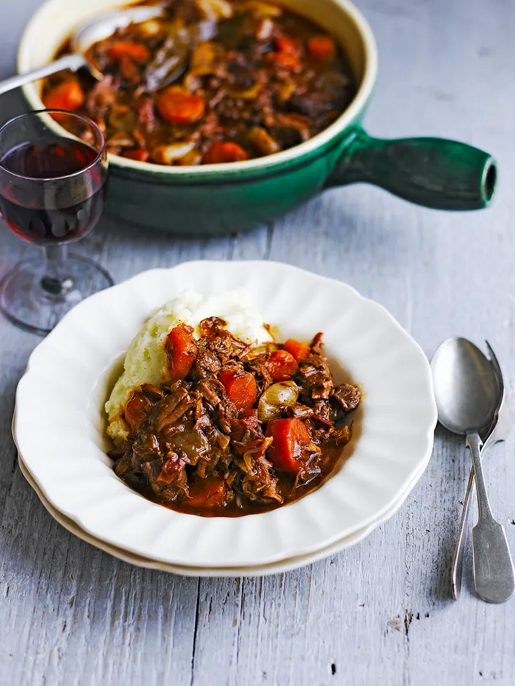

Beef Stew

Beef Stew
SHALLOTS, VINE TOMATOES & WORCESTERSHIRE SAUCE
“A meltingly tender beef stew recipe with minimal prep – get it in the oven in next to no time,
and leave it to work its magic. ”
Ingridients
- 800 g lean stewing beef
- 2 tablespoons plain flour
- olive oil
- 2 cloves of garlic
- 1 handful of shallots
- 2 sticks of celery
- 4 carrots
- ½ a bunch of fresh thyme , (15g)
- 4 ripe vine tomatoes
- 500 ml organic beef stock
Steps/Method
- Preheat the oven to 160ºC/325ºF/gas 3.
- Dice the beef into 1cm pieces, then toss in a bowl with the flour, making sure the meat chunks are totally covered. Set aside.
- Add a splash of oil to a large casserole pan and place it over a medium heat. When it’s hot, add the beef and cook for 5 minutes, or until the meat is browned all over. Transfer to a plate and leave to one side.
- While the beef cooks, peel and finely chop the garlic, then peel the shallots and halve most of them, keeping a few whole. Trim and roughly chop the celery, then peel, trim and chop the carrots into 2cm rounds.
- Splash a little more oil into the pan, then add the veg. Strip the leaves from the thyme and add to the pan, then cook for 10 to 15 minutes, or until the vegetables are softened.
- Return the beef to the pan, then stir through the tomatoes and wine. Once the liquid has been absorbed, add the stock, bay leaves and a splash of Worcestershire sauce.
- Season with sea salt and black pepper, then transfer the stew to the oven to cook for 3 to 4 hours, or until the meat is tender and pulls apart easily with forks.
- Serve your beef stew with creamy mashed potato.
Return To Main